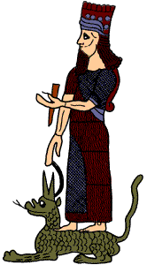

The Challenge -
Nabu in the city of Borsippa

Nabu was the god of writing without which the world couldn't be organised. He held a writing tool made from a sharpened reed and looked after the cuneiform tablets of the god Marduk. One of the most important cuneiform tablets was known as the ‘Tablet of Destinies'. Usually the most important god held the Tablet of Destinies and wrote the future of everything on it. Whatever he wrote would happen. One day the god got undressed to have a bath and put down the Tablet. At that moment the Anzu bird flew down and stole the Tablet of Destinies which gave him control of the future. It was only after a long struggle that the Anzu bird was killed and the Tablet of Destinies recovered. Once again the future was safe.
|
|